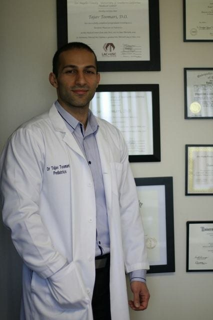

Dr. Tajav Toomari and our team are dedicated to the health and wellbeing of your child from newborn through adolescence.
From your baby's first checkup to sports physicals for teens — complete care for every stage of childhood.
Regular wellness exams to track your child's growth, development, and overall health at every milestone.
Same-day appointments when illness strikes, so your child gets the care they need — fast.
Complete immunizations following CDC guidelines, with parent education on what to expect.
Convenient video visits for follow-ups, minor concerns, and referrals — from the comfort of home.

Dr. Tajav Toomari founded his practice in 2009 after completing his pediatric training at USC. Board-certified in pediatrics, Dr. Toomari is the medical director and sole provider at both locations — personally seeing every patient himself.
His mission is simple: equal access to excellent medical care for every family in the San Fernando Valley, from newborns to teenagers, regardless of background or insurance.
Dr. Toomari speaks English, Spanish, and Farsi. Both offices are staffed by experienced, friendly, bilingual professionals.
Learn More About Dr. ToomariWe know parenting is hard enough. We make sure healthcare isn't.
Walk into either office or schedule ahead — whatever fits your family's day best, we're ready.
Dr. Toomari speaks English, Spanish, and Farsi, and our offices are staffed by bilingual professionals.
Dr. Toomari is the sole provider at both offices — your child is personally seen by him every time.
No matter your plan, we accept it. Equal access to excellent care is at the heart of our mission.
After-hours availability including weekends and holidays — because kids don't get sick on a schedule.
Offices in Van Nuys and Encino — excellent pediatric care close to your family's home.
"Dr. Toomari is genuinely one of the kindest, most thorough doctors we've ever worked with. She actually listens. Our daughter looks forward to every visit."
"We switched practices three times before finding Dr. Toomari. The same-day sick visits are a lifesaver, and the bilingual staff makes my parents feel at home."
"From newborn checkups to my teenager's sports physicals, Dr. Toomari has been with us every step. We can't imagine going anywhere else."
Book an appointment today, or chat with Maya — our virtual receptionist — for instant answers.